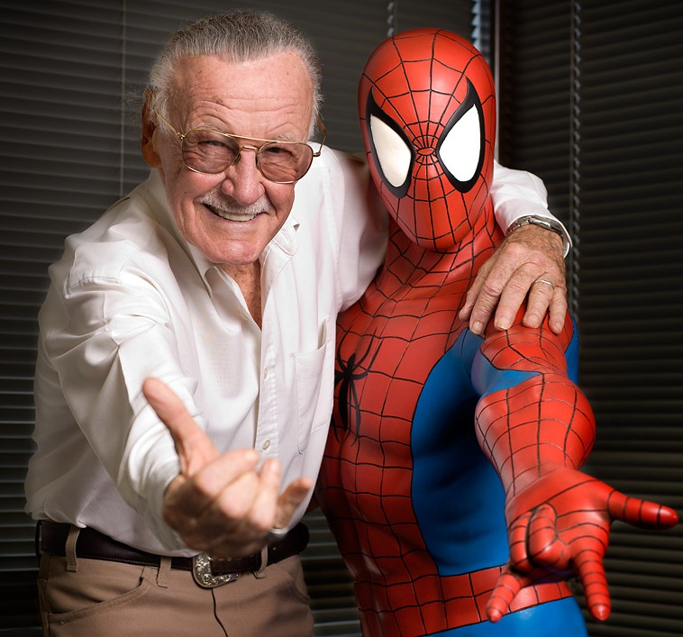
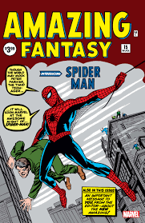

Spider-Man

Creation
Spider-Man was co-created by Stan Lee and Steve Ditko. The idea came to Stan Lee after he saw a fly stick to a wall, and thought it would be cool if a hero had the ablity to stick to walls. After trying out a few different names, including Fly-Man and Mosquito-Man he decided on Spider-Man because "it just sounded dramatic." After decided the powers and names he decided to make him a teenager, since there were little to none teenage heroes at the time, and give him personal problems to make him more relatable.
When Stan Lee brought the idea up to his editor, who didn't think it would sell or be popular. However, one of their comics, Amazing Fantasy was on its last issue, since it wasn't making enough revenue, and the editor gave Stan permission to put whatever he'd like in the final issue. Stan decided to put Spider-Man in it to get it out of his system. However, audiences liked Spider-man so much that his editor gave Stan the opportunity to make Spider-Man his own comic, and thus The Amazing-Spider-Man was born.

Origins
Spider-Man's first Appearance was in Amazing Fantasy 15, which depicted the life of a young highschooler named Peter Parker. Peter was orphaned, and lived in Queens with his Aunt May and Uncle Ben, and attended Midtown Highschool, where he was the brightest student but also constantly bullied. One afternoon Peter went to a science exhibit about radioactivity, however a spider dropped down into the machine, and then bit Peter, giving him the ability to crawl on walls and other surfaces, a spider-sense that warns him of danger, and the proportional strength of a spider. Peter decides to profit off of these abilities, and uses his knowledge to make a pair of webshooters, and a costume in which he acts as the Amazing Spider-Man. After refusing to stop a robber after a show, Peter returns home to find the house had been robbed, and his Uncle Ben murdered. After following a police report Peter finds the robber, and finds out that it was the same person Peter refused to stop earlier. Peter realizes that his Uncle's death is his fault, and that if he had stopped the robber when he had the chance then Uncle Ben would be alive. Driven by the guilt Peter discovers that With Great Power, There Must Also Come Great Responsibility, and vows to dedicate his powers to good, so that no one has to lose anyone like he lost Uncle Ben. And Thus, Spider-Man begun as a hero.
Different Spider-People
Different Spider-People include:
- Peter Parker - Earth 616
- Peter Parker - Spider-Man Noir
- Peter Parker - Ultimate Universe
- Peter Porker - The Spectacular Spider-Ham
- Penny Parker
- Ben Reily - Clone of Peter Parker
- Otto Octavius in Peter Parker's body - Surperior Spider-Man
- May Parker - Spider-Ma'am
- Annie Mayday Parker, daughter of Peter - Spinneret
- Miles Morales - Ultimate Universe
- Gwen Stacy - Ghost Spider/Spider-Gwen
- Cindy Moon - Silk
- Spiders-Man
- Spider-UK
- Spider-Man India
- Spider-Man PS4
- Supaidaman - Japanese Spider-man
- Tobey Maquire - Friendly Spider-Man
- Andrew Garfield - The Amazing Spider-Man
- Tom Holland - Marvel's Spider-Man